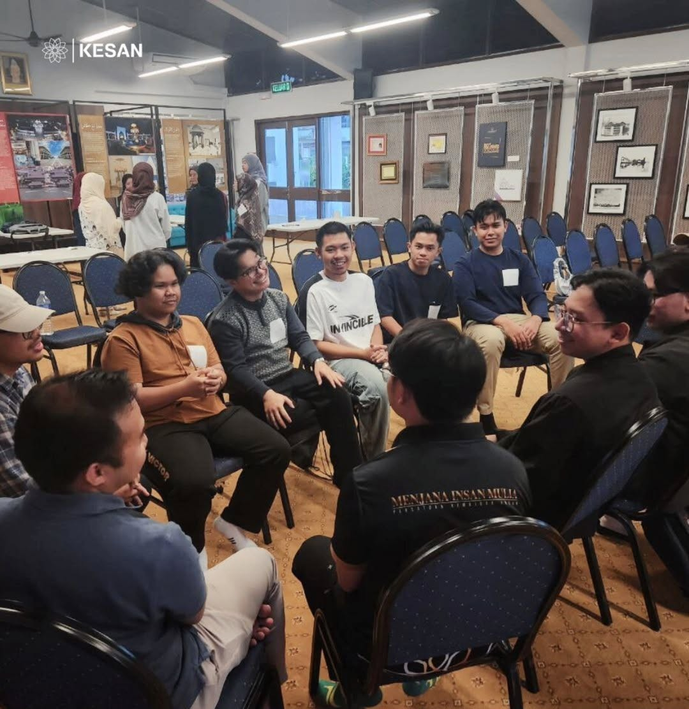
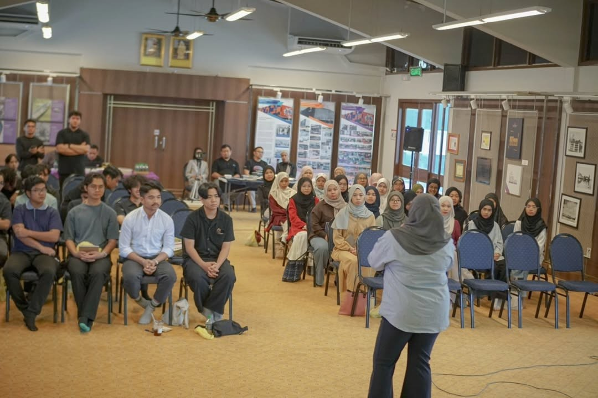

Persatuan Kemajuan Insan (KESAN) mentors young people through a structured leadership journey — from personal growth to team and community leadership.

Building Brunei's next generation of leaders
Watch how KESAN walks alongside young people through their leadership journey — from the first step of personal growth to leading communities across Brunei.

Leadership in ActionKESAN focuses on mentoring youth leaders through structured leadership development. Our approach emphasises personal growth, responsibility, and leadership through real engagement with teams and communities.
We believe that effective leaders are built through sustained, guided experience — not short workshops. KESAN's mentoring model walks alongside young people across years of real development.
KESAN is led by a dedicated team of mentors and organisers committed to developing youth leadership across Brunei.
Building discipline, values, and self-awareness from within.
Learning to guide, motivate, and support others effectively.
Creating meaningful impact beyond the group, for society.
"I struggled with confidence when speaking to others."
"My mentor guided me through real leadership responsibilities step by step."
"Today I lead a student initiative at my university with confidence."
Universities and organizations partner with KESAN to develop youth leadership through mentoring and structured programs. Together, we shape the next generation of Brunei’s leaders.
Contact KESAN